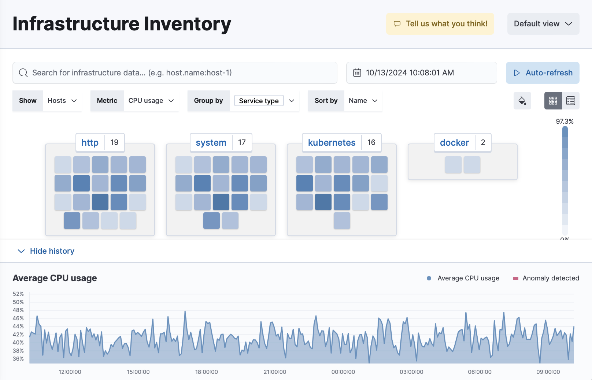

Infrastructure monitoringedit
The Infrastructure app in Kibana enables you to visualize infrastructure metrics to help diagnose problematic spikes, identify high resource utilization, automatically discover and track pods, and unify your metrics with logs and APM data in Elasticsearch.
Using Elastic Agent integrations, you can ingest and analyze metrics from servers, Docker containers, Kubernetes orchestrations, explore and analyze application telemetries, and many more.
